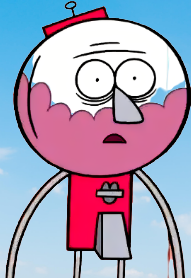
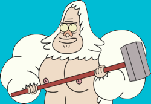
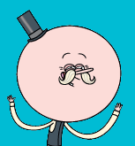
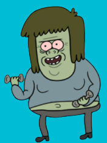
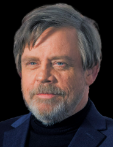

Regular Show
De vuelta a un nuevo capitulo
Es una serie de T.V animada estadounidense creada por J.G. Quintel para Cartoon Network. el programa sigue las aventuras surrealistas de un arrendajo azul llamado Mordecai y un mapache llamado Rigby que trabajan como jardineros en un parque local, el programa cuenta con 8 temporadas y 261 episodios en total. Ha sido bien recibido por el publico y los criticos por igual, por su humor y referencias a la cultura popular de finales del siglo XX.
Mordecai y Rigby
"¡Siiii que Siiiiii!"

Mordecai y Rigby son los personajes principales de la serie animada "Un Show Mas" que se emitio en Cartoon Network. Mordecai es un arrendajo azul y Rigby un mapache de 23 años de edad, son dos de los trabajadores del parque, pero es tan aburrido el trabajo que harian cualquier trabajo para divertirsen y asi poder evadir su trabajo, por eso siempre tienen problemas con su jefe llamado Benson.

Benson
"¡Estan despedidos!"

Benson es un personaje principal de la serie animada "Un Show Mas", es una maquina expendedora de chicle y ademas es el gerente del parque donde trabajan Mordecai y Rigby. Benson es muy gruñon y tiene un caracter fuerte, pero tambien es responsable y trabaja duro.
J.G Quintel
James Garland (nacio el 13 de septiembre de 1982 en Hanford, California - Estados Unidos), es un animador, actor de voz, director, guionista, dibujante y productor estadounidense, mas conocido por ser el creador y el director creativo de la serie animada Regular Show.
Personajes Principales
-

Skips
Es un yeti que trabaja en el parque como jardinero y se encarga del mantenimiento y tareas forzadas. -

Papaleta
Es una piruleta humanoide, es conocido por su personalidad optimista. -

Musculoso
Trabaja como jardinero en el parque junto a Mordecai y Rigby -
 Fantasmin
Fantasmin
Fantasmin trabaja junto a su mejor amigo musculoso como jardinero
Tags
Comedia Serie Animacion Risas Estadounidense Mordecai Rigby Regular Show Muñecos que hablan Personajes Adolecentes Diversion Vocabulario grotesco
Interpretes de Personajes Principales

Suscribirse
Ingrese su correo electrónico a continuación y reciba notificaciones sobre las últimas publicaciones del blog